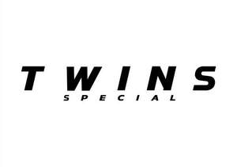

Trade Mark Journal No.2025/048 28 November 2025
UK00004278616 15 October 2025 (35)

- Class 35
- Advertising, marketing and promotional services; business assistance, management and administrative services; consumer information services; online retail store services relating to clothing; online retail store services relating to sporting equipment; retail store services for clothing; wholesale store services for clothing; retail trading services in relation to head guards for sports, boxing head guards, mouth guards for boxing, downloadable application software, boxing shorts, shorts, mitts as clothing, boxing robes, jogging suits, training suits, sweat suits, sweat pants, t-shirts, polo shirts, long pants, boxing shoes, boxing jackets, boxing jackets for trainers, tank tops for sports, sportwear, boxing headbands (clothing), boxing armbands (clothing), apparatus for boxing, punching balls, boxing gloves, boxing rings, punching bags for boxing, shin pads for use in sports, shin guards as sports articles, protective cups for sports, protective paddings for playing sports, knee protection for sports use, arm protection for sports use, leg protection for sports use, shin protection for sports use, elbow protection for sports use, kick pads for martial arts, martial arts training equipment, focus pads for martial arts, punching mitts, targets, belly protection for sports use, hand wraps for sports use, skipping ropes, protective covers for sporting articles, protective padded articles for use in playing a specific sport, body protection for sports use, thigh protection for sports use, boxing wall mounted punching bag, knee supports for boxing, ankle supports for boxing, elbow supports for boxing, shin supports for boxing, elbow supports for playing sports, boxing supporters as sports articles, wrist supports for boxing, hand wraps for boxing, boxing protective articles, toys, toy models, training ring, ropes for boxing rings, rope covers for boxing rings, ring skirts for boxing rings, rope dividers for boxing rings, corner covers for boxing rings, corner pads for boxing rings, turnbuckles for boxing rings, turnbuckle covers for boxing rings, floors for boxing rings, wrist wraps for boxing, knee wraps for sports use, kicking targets, focus mitts for boxing.
Twins Special Co., Ltd.
Representative: Humphreys & Co.